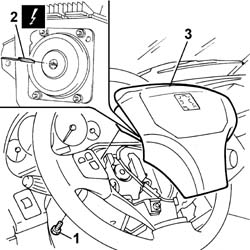

5580C18 AIR BAG MODULE - R+R
- Path
- Procedures > 55 ELECTRICAL EQUIPMENT > 5580 SPECIAL ACCESSORIES > 5580C AIR BAG SYSTEM > 5580C18 AIR BAG MODULE - R+R
- Kind
- repair procedure (removal / refitting; the operation number is the code)
- Applies to
- all engines; all production periods
- Interactive page
- https://sloeber94.github.io/elrnDB-fDct/en/#/244001405
Applies to: all engines; all production periods
 Removing
Removing
 Refitting
Refitting- Before removing and refitting the Air Bag module the following preliminary operations must be carried out: (1) turn the ignition key to the OFF position and extract it; (2) wait for 2 minutes before continuing; (3) remove the battery housing cover, disconnect the negative battery terminal and insulate the leads; (4) wait for 5 minutes before continuing.
1. Undo the 3 retaining bolts.
- Partly remove the Air Bag module.
2. Disconnect the electrical connection.
 | Description | Connector |
|---|---|---|
2 | Driver's Air Bag | Q009 |
3. Remove the Air Bag module.

Applies to: all engines; all production periods
- Place the Air Bag module in the special cupboard, resting it on a free surface with the bag facing upwards.
Applies to: all engines; all production periods
Refitting
Removing- Observe the following precaution.
- If a new module is being fitted, position the labels. Remove the detachable part of the adhesive label from the new module and place it in the special folder containing the vehicle details (model, registration date, chassis number) and the serial number of the old module. The file should be kept for future checks. A new adhesive plate comes together with the module and should be stuck on top of the existing one. Beforehand, however, it should be perforated at the month and 10 years after the year in which the module is being fitted (e.g. 2010 for 2000).
- Connect the electrical connection and secure it using the special safety device.
| Description | Connector |
|---|---|---|
. | Driver's Air Bag | Q009 |
- Position the Air Bag module in the housing and tighten the fixing bolts.
- Check the operation of the system using the Examiner or other diagnostic equipment.
Topics that link to this page (22)
- 4110A10 STEERING WHEEL - R+R FOR REPLACEMENT OR CHECKS
- 4110A21 STEERING WHEEL ADJUSTMENT DEVICE - R.R.
- 4110A31 MOUNT WITH STEERING CONTROL SHAFTS - RR - INCLUDES RR STEERING WHEEL FOR VERSIONS WITH AIR BAG
- 5010B24 UNDER-FACIA AIR DUCTS R R
- 5020A10 HEATER BOX - R+R
- 5040A80 EXPANSION/CONNECTION PIPE - R R
- 5040B22 AIR CONDITIONING SYSTEM DE-MISTER THERMOSTAT - R+R
- 5040B30 EXPANSION VALVE (TUBE ORIFICE) - R+R
- 5040C10 AIR CONDITIONER CONTROL SUPPORT - R+R
- 5040C30 FAN MOTOR - R+R
- 5040C50 AIR CONDITIONER HEATER RADIATOR - R+R
- 5040C56 CONNECTING PIPE BETWEEN TAP AND AIR CONDITIONING HEATER RADIATOR - R.R.
- 5040C58 AIR CONDITIONING HEATER RADIATOR TAP - R.R.
- 5040C64 A/C MANUAL CONTROL SWITCH (ONE) - R+R
- 5040D10 AIR CONDITIONER CONTROL SUPPORT - R+R
- 5040D47 AIR DISTRBUTION FLAP - AIR INTAKE/RECIRCULATION - TAP TRANSMISSION - R.R.
- 5505C31 UNDER-FACIA WIRING - R R
- 5550A12 COMPLETE STALK UNIT - R+R FOR VERSIONS WITH AIR BAG
- 5580C12 CLOCK SPRING FOR AIR BAG MODULE ON STEERING WHEEL R R
- 7040A10 L/H OR R/H FRONT SEAT (ONE) - R+R
- 7040A97 FACIA TRIM SUPPORT BEAM - R R
- 7040L17 PASSENGER COMPARTMENT FLOOR FRONT CARPET - R R